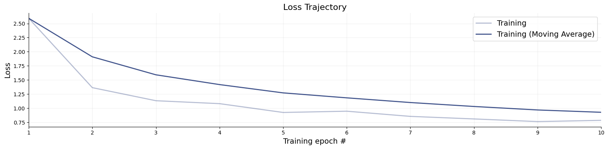

4. Approximators#
An approximator is the central object in BayesFlow. It wires together an adapter, an optional summary network, and an inference network, and exposes a unified API for training and inference.
Approximators are Keras models. They implement .fit() for training and task-specific inference methods (.sample(), .log_prob(), .predict(), etc.) for posterior queries.
This page covers:
Approximator types — which one to use for your task
Key methods —
fit,sample,log_prob, and friendsApproximators in detail — more details about each approximator
Saving and loading — a quick serialization/deserialization demo
4.1. Approximator Types#
Approximators are independent Keras models — you don’t need a workflow to use them, even though workflows are recommended unless you need lower level control. This is useful when you want fine-grained control over the training loop, want to integrate BayesFlow into an existing codebase, or are building a non-standard pipeline.
Approximator |
Task |
Primary inference method |
|---|---|---|
|
Neural posterior / likelihood estimation (NPE, NLE) |
|
|
Bayesian model selection (discrete posteriors) |
|
|
Likelihood-to-evidence ratio estimation (NRE-C) |
|
|
Point estimation via scoring-rule minimization |
|
|
Ensemble of heterogeneous approximators |
|
|
Compositional / hierarchical distributions |
|
All approximators live in bayesflow.approximators and are re-exported from the top-level bayesflow namespace.
import bayesflow as bf
4.2. Key Methods#
4.2.1. fit and compile#
All approximators share the same fit interface. You can pass either a simulator (BayesFlow builds the dataset for you) or a pre-built dataset:
# Here's a very basic simulator and adapter
import numpy as np
def prior():
return dict(theta=np.random.normal(size=2))
def likelihood(theta):
return dict(x=np.random.normal(theta[0], np.exp(theta[1] * 0.5), size=20))
simulator = bf.make_simulator([prior, likelihood])
adapter = (
bf.Adapter()
.convert_dtype("float64", "float32")
.rename("x", "inference_conditions")
.rename("theta", "inference_variables")
)
# Create an approximator (e.g., for a continuous distribution)
approximator = bf.ContinuousApproximator(inference_network=bf.networks.FlowMatching(), adapter=adapter)
# Compile first — sets the optimizer; compatible with any keras optimizer
approximator.compile(optimizer="adam")
# Train via simulator (most common path)
history = approximator.fit(simulator=simulator, epochs=10, batch_size=32, num_batches=10, workers=8)
# Loss trajectories can be inspected like so:
f = bf.diagnostics.loss(history)

# Or using an in-memory simulation bank
sim_bank = simulator.sample(1024)
# Convert simulation bank to a dataset object that takes care of batching etc
dataset = bf.OfflineDataset(sim_bank, batch_size=32, adapter=adapter)
# Training is much faster now, since simulation is decoupled from learning
history = approximator.fit(dataset=dataset, epochs=10)
4.3. Approximator Details#
4.3.1. ContinuousApproximator#
The ContinuousApproximator is the standard choice for neural posterior estimation (NPE) and neural likelihood estimation (NLE). It learns a continuous density \(p(\theta \mid x)\) (or \(p(x \mid \theta)\)) using a normalizing flow or diffusion-based inference network.
approximator = bf.approximators.ContinuousApproximator(
inference_network=bf.networks.FlowMatching(),
# summary_network=bf.networks.SetTransformer(), # optional; requires .as_set() in adapter
adapter=adapter
)
approximator.compile(optimizer="adam")
approximator.fit(simulator=simulator, epochs=2, batch_size=32, num_batches=10)
test_batch = simulator.sample(4)
x_obs = test_batch["x"].astype("float32")
theta = test_batch["theta"].astype("float32")
4.3.2. .sample(num_samples, conditions) — draw posterior samples#
# conditions: dict of observed data, preprocessed by the adapter
samples = approximator.sample(num_samples=1000, conditions={"x": x_obs})
# returns: {"theta": np.ndarray of shape (num_conditions, 1000, theta_dim)}
4.3.3. .log_prob(data) — evaluate the log-posterior density#
log_p = approximator.log_prob({"x": x_obs, "theta": theta})
# returns: np.ndarray of shape (num_conditions,)
4.3.4. .ancestral_sample(conditions, ancestral_conditions) — hierarchical sampling#
For hierarchical models, child-level observations are conditioned on parent-level parameters. One can use ancestral_sample to specify child_conditions and parent_conditions correspondingly. See also our example notebook for compositional diffusion for more detail.
# Example of specifying child and parent (ancestral) conditions for hierarchical sampling
# Not run here because we do not have a hierarchical simulator
# samples = approximator.ancestral_sample(
# conditions=child_conditions,
# ancestral_conditions=parent_conditions,
# num_samples=500
# )
NPE vs NLE: The choice between posterior estimation and likelihood estimation is controlled entirely by how the adapter routes variables — not by the approximator class. Point
inference_variablesatthetafor NPE, or atxfor NLE.
4.3.5. ModelComparisonApproximator#
Use this when comparing a discrete set of competing simulators / models. It learns posterior model probabilities \(p(M_k \mid x)\) via a classifier trained with cross-entropy.
def prior_null(): return dict(mu=0.0)
def prior_alt1(): return dict(mu=np.random.normal(0, 1))
def prior_alt2(): return dict(mu=np.random.normal(0, 2))
def likelihood_mc(mu, n=10): return dict(x=np.random.normal(mu, 1, size=n))
sim1 = bf.make_simulator([prior_null, likelihood_mc])
sim2 = bf.make_simulator([prior_alt1, likelihood_mc])
sim3 = bf.make_simulator([prior_alt2, likelihood_mc])
mc_adapter = (
bf.Adapter()
.as_set("x")
.convert_dtype("float64", "float32")
.rename("x", "summary_variables")
.rename("model_indices", "inference_variables")
)
test_batch_mc = bf.simulators.ModelComparisonSimulator([sim1, sim2, sim3]).sample(4)
x_obs_mc = test_batch_mc["x"].astype("float32")
approximator = bf.ModelComparisonApproximator(
num_models=3,
classifier_network=bf.networks.MLP(),
summary_network=bf.networks.SetTransformer(), # optional; requires .as_set() in adapter
adapter=mc_adapter,
)
Training requires a ModelComparisonSimulator (or a list of simulators):
approximator.compile(optimizer="adam")
approximator.fit(simulators=[sim1, sim2, sim3], adapter=mc_adapter, epochs=2, batch_size=32, num_batches=10)
4.3.6. .predict(conditions) — posterior model probabilities#
probs = approximator.predict(conditions={"x": x_obs_mc})
# returns: np.ndarray of shape (num_conditions, num_models)
# probs[i, k] = estimated P(M_k | x_obs[i])
Pass probs=False to get raw logits instead.
4.3.7. RatioApproximator#
Implements neural ratio estimation (NRE-C), learning the log likelihood-to-evidence ratio \(\log \frac{p(x \mid \theta)}{p(x)}\) via contrastive learning. Useful when you need a flexible, simulation-based density ratio without committing to a specific parametric form.
approximator = bf.RatioApproximator(
inference_network=bf.networks.MLP(),
adapter=adapter,
K=5, # number of negative samples per positive pair
gamma=1.0 # odds of a dependent pair; increase to up-weight joint pairs
)
approximator.compile(optimizer="adam")
approximator.fit(simulator=simulator, epochs=2, batch_size=32, num_batches=10)
4.3.8. .log_ratio(data) — estimated log likelihood-to-evidence ratio#
log_r = approximator.log_ratio({"x": x_obs, "theta": theta})
# returns: Tensor of shape (num_conditions,)
4.3.9. ScoringRuleApproximator#
Minimizes a proper scoring rule (e.g., energy score, CRPS) instead of a likelihood. Useful when you want amortized point estimates or light-weight distributional summaries rather than full posterior samples.
approximator = bf.ScoringRuleApproximator(
inference_network=bf.networks.ScoringRuleNetwork(
scoring_rules={
"mean": bf.scoring_rules.MeanScore(),
"quantile": bf.scoring_rules.QuantileScore(q=[0.1, 0.5, 0.9])
},
subnet=bf.networks.MLP()
),
adapter=adapter
)
approximator.compile(optimizer="adam")
approximator.fit(simulator=simulator, epochs=2, batch_size=32, num_batches=10)
4.3.10. .estimate(conditions) — point estimates and distributional parameters#
estimates = approximator.estimate(conditions={"x": x_obs})
# returns nested dict: {variable_name: {score_name: {head_name: np.ndarray}}}
# e.g., {"theta": {"mean": {"mean": ...}, "quantile": {"0.1": ..., "0.5": ..., "0.9": ...}}}
Grouping can be changed with groupby="score" to inspect results per scoring rule.
4.3.11. EnsembleApproximator#
Wraps multiple named approximators and trains them jointly. It can wrap approximators of different types, such as point and distribution approximators. At inference time, it can return per-member outputs or merge them into a mixture.
approximator = bf.EnsembleApproximator(
approximators={
"flow": bf.ContinuousApproximator(
inference_network=bf.networks.FlowMatching(), adapter=adapter
),
"diffusion": bf.ContinuousApproximator(
inference_network=bf.networks.DiffusionModel(), adapter=adapter
)
}
)
approximator.compile(optimizer="adam")
approximator.fit(simulator=simulator, epochs=2, batch_size=32, num_batches=10)
conditions = {"x": x_obs}
data = {"x": x_obs, "theta": theta}
All members share the same training data; the adapter is taken from the first member.
4.3.12. .sample(num_samples, conditions) — merged mixture samples#
# Returns a single merged sample array by default (mixture of all members)
samples = approximator.sample(num_samples=500, conditions=conditions)
# Per-member results
samples = approximator.sample(num_samples=500, conditions=conditions, merge_members=False)
# returns: {"flow": ..., "diffusion": ...}
# Weighted mixture
samples = approximator.sample(
num_samples=500, conditions=conditions,
member_weights={"flow": 0.7, "diffusion": 0.3}
)
4.3.13. .log_prob(data) — log-probability under the mixture#
log_p = approximator.log_prob(data, merge_members=True) # log-sum-exp mixture
4.3.14. .estimate(conditions) — point estimates (for members that support it)#
estimates = approximator.estimate(conditions=conditions)
# returns: {"member_name": {variable: array}} by default
# or groupby="variable": {variable: {"member_name": array}}
4.3.15. CompositionalApproximator#
Extends ContinuousApproximator to handle compositional distributions — settings where the inference conditions themselves have a compositional structure (e.g., multi-level or hierarchical observations processed jointly).
approximator = bf.approximators.CompositionalApproximator(
inference_network=bf.networks.FlowMatching(),
adapter=adapter
)
approximator.compile(optimizer="adam")
approximator.fit(simulator=simulator, epochs=2, batch_size=32, num_batches=10)
conditions = {"x": x_obs}
4.3.16. .compositional_sample(num_samples, conditions) — compositional posterior samples#
Input conditions are expected to have shape (n_datasets, n_compositional, ...) where n_compositional >= 2.
samples = approximator.compositional_sample(num_samples=500, conditions=conditions)
For most use cases, ContinuousApproximator is sufficient. Reach for CompositionalApproximator when your generative model has explicit compositional structure that must be preserved at inference time. See the Compositional Diffusion example for a worked example.
4.4. Saving and Loading#
Standalone approximators are saved and loaded identically to workflow-managed ones:
# Load (import bayesflow first to register custom objects)
# Reimport if approximators come from other code
# import bayesflow as bf
import keras
# Serialize approximator
approximator.save("my_model.keras")
# Deserialize approximator
approximator = keras.saving.load_model("my_model.keras")
See Saving & Loading for further details.